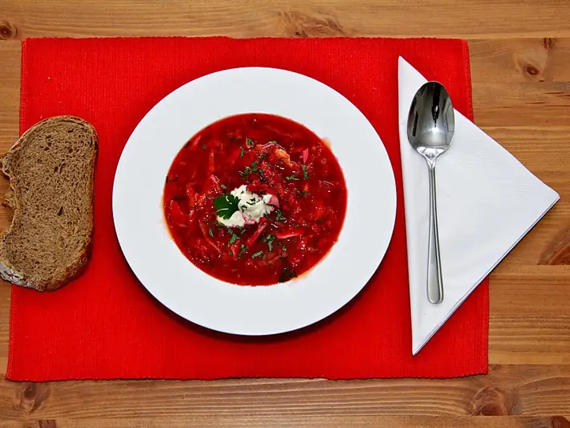

Фото: Juerg Vollmer from Zürich, Schweiz, CC BY-SA 2.0

Борщ
Красный борщ на говяжьем бульоне со свёклой и капустой
150 мин6 порц.349 ккал на порциюБ 23 · Ж 18 · У 24Украинская кухня
Продукты на 6 порц.
- Говядина600 г
- Вода2,5 л
- Свёкла2 шт
- Капуста белокочанная400 г
- Картофель3 шт
- Морковь1 шт
- Лук репчатый1 шт
- Томатная паста2 ст. л.
- Растительное масло2 ст. л.
- Уксус 9%1 ч. л.
- Сахар1 ч. л.
- Чеснок2 зуб.
- Лавровый лист2 шт
- Соль2 ч. л.
- Перец чёрный молотый1 щеп.
- Сметана 20% по желанию6 ст. л.
- Укроп по желаниюпо вкусу
Как готовить
- Залейте говядину холодной водой, доведите до кипения на сильном огне, снимите пену. Варите на слабом огне 1,5 часа, пока мясо не станет мягким.
- Достаньте мясо, нарежьте кусочками и верните в бульон. Посолите.
- Свёклу натрите на крупной тёрке. Обжарьте на масле на среднем огне 5 минут, добавьте томатную пасту, уксус и сахар, тушите ещё 10 минут.
- Лук нарежьте мелко, морковь натрите. Обжарьте на масле на среднем огне 5-7 минут до мягкости.
- Положите в бульон картофель кубиками, через 10 минут - нашинкованную капусту. Варите 10 минут.
- Добавьте свёклу и зажарку, лавровый лист, перец. Варите 5 минут на слабом огне, чтобы борщ не потерял цвет.
- Выключите огонь, добавьте раздавленный чеснок, накройте крышкой и дайте настояться 15-20 минут. Подавайте со сметаной и укропом.
Совет. Свёклу с уксусом добавляйте в конце и не давайте борщу бурно кипеть, иначе он станет бурым. На второй день борщ вкуснее.